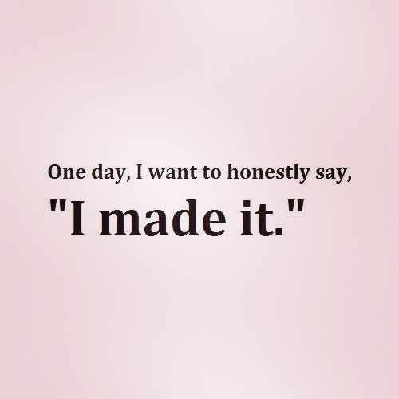

Great Study Tips
- Eliminate distractions There's a little chance that studying with friends will help your process of memorising things. Their progress might put you off and make you lose motivation. Make sure that your cellphone is not easily accessible when you are studying, as it can distract you. Ensure you're in an environment that best suits your needs, for example study where there are not too many people.
- Use your learning skills for memorisation Everyone has different learning styles, and can use this to their advantage. Don't use methods that work for other peeople, use trial and error methods and see what works for you. This can involve reading and wirting notes, listening to audios of notes or drawing flow charts in order to memorise your material.
- Set deadlines
- Don't stress too much
- Eat healthy and exercise
- Get difficult things out of the way first
- Stay organised
- Understand topics in your own words
The key to help improve your memory is by unerstanding topics in your own words. If you don't understand something in your own words, you ae more likely to forget that information.
- Quiz yorself
- Motivation is important
When you dont have time limits, you tend to procrastinate and put your studying off. This is bad and can affect productivity. Break up your work by maybe doing two hours everyday. You will fall into this routine and productivity will rapidly increase. Reward youself after each session!
Everytime you feel anxious or de-motivated think about what will happen if you pass/fail a test. Stressing too much can make you so nervous that may make you forget things (maybe as much as I have). This doesnt mean that you shouldn't care, it just means that you shouldn't stress too much.
By eating healthy and being involved in physical activity, your cognitive performance will increase as your stress levels will decrease too. This basically means that the more active you are, the better your memory and thinking skills can be.
This is a good strategy as getting challenging things over will make everything else seem easier. Everything that comes after that will go much quicker and will give you more time to relax!
You cannot do work when you don't know what has to be in and when. This can cost you alot of time that has been wasted. Use a planner to keep track of assigment due dates. This way you always take things in on time, and also time won't be wasted, that could have been used for better things.
When you do this, you obtain a greater understanding and knowledge of the work. You get to imagine what tests would be like and this can help you improve! Create your own tests and make flashcards.
Don't find excuses not to study. Remeber, you are working towards your future and a successfull one at that! It's important to always stay motivated, and when you don't, think about where you want to be in the future!
